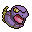
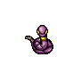
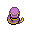

Pokédex / #023

Ekans #023
Poison
A very common sight in grassland, etc. It flicks its tongue in and out to sense danger in its surroundings.
Generation 1 · Kanto

Stats
| Attack | 60 | |
|---|---|---|
| Defense | 44 | |
| Sp. Atk | 40 | |
| Sp. Def | 54 |
In the wild
| Wild level | 12–22 |
|---|---|
| HP | 35 |
| Experience | 7 |
| Egg groups | Field, Dragon |
Evolution
- Evolves into Arbok at level 22.
Moves
| Level | Move | Type | Category | Power | Energy | Cooldown | Effect | |
|---|---|---|---|---|---|---|---|---|
| 1 | Tackle | Normal | Physical | 15 | 15 | 1s | Tackle is one of the most common and basic moves a Pokemon learns. It deals damage with no additional effects. | |
| 1 | Wrap | Normal | Physical | 35 | 45 | 13s | Wrap deals damage and lower the Speed of the target by two stages. | |
| 4 | Poison Sting | Poison | Physical | 15 | 20 | 5s | Poison Sting inflicts damage and has a 30% chance of poisoning the target. | |
| 9 | Bite | Dark | Physical | 60 | 60 | 9s | Bite deals damage and has a 30% chance of causing the target to flinch. | |
| 12 | Glare | Normal | Status | – | 15 | 13s | Glare paralyzes the target. | |
| 17 | Screech | Normal | Status | – | 100 | 35s | Screech lowers the target's Defense by two stages. | |
| 20 | Acid | Poison | Special | 40 | 40 | 6s | Acid deals damage and has a 10% chance of lowering the target's Special Defense by one stage. | |
| 25 | Stockpile | Normal | Status | – | 90 | 10s | Raises the user's Defense and Special Defense by one stage and charges up power for use with companion moves Spit Up or Swallow. | |
| 25 | Swallow | Normal | Status | – | 90 | 120s | Swallow recovers a varying amount of HP depending on how many times the user has used Stockpile. It recovers 25%, 50% or 100% of the user's maximum HP if the user stockpiled one, two or three times respectively. | |
| 25 | Spit Up | Normal | Special | 100 | 150 | 30s | Spit Up deals varying damage depending on how many times the user used Stockpile. The base power is 100, 200 or 300 if the user stockpiled one, two or three times respectively. | |
| 28 | Acid Spray | Poison | Special | 40 | 55 | 9s | Acid Spray inflicts damage and lowers the target's Special Defense by two stages. | |
| 33 | Mud Bomb | Ground | Special | 65 | 80 | 10s | Mud Bomb deals damage and has a 30% chance of lowering the target's Accuracy by one stage. | |
| 36 | Gastro Acid | Poison | Status | – | 120 | 90s | The user hurls up its stomach acids on the target. The fluid eliminates the effect of the target's Ability. | |
| 38 | Belch | Poison | Special | 60 | 60 | 13s | The user lets out a damaging belch at the target. | |
| 41 | Haze | Ice | Status | – | 100 | 120s | Resets all stat changes. | |
| 44 | Coil | Poison | Status | – | 70 | 60s | Coil raises the user's Attack, Defense by by one stage each and clear Accuracy . | |
| 49 | Gunk Shot | Poison | Physical | 120 | 125 | 18s | Gunk Shot deals damage and has a 30% chance of poisoning the target. |
Field abilities
DigStrengthRock SmashHeadbutt
Special abilities
IntimidateShed Skin
Egg moves
Beat UpDisableIron TailPoison FangPoison TailPursuitScary FaceSlamSnatchSpiteSucker PunchSwitcheroo
Technical machines
BideBody SlamDouble EdgeDouble TeamEarthquakeFissureGiga DrainHeadbuttIron TailMega DrainMimicPoison JabRageRain DanceRestRock SlideRock TombSkull BashSludge BombSubstituteTake DownToxic
Drops
| Item | Amount | Chance | |
|---|---|---|---|
| bottle of poison | 1–4 | 88.9% | |
| tooth | 1 | 29.6% | |
| venom pendant | 1 | 26.7% | |
 | ekans doll | 1 | 0.1% |
Other forms
Christmas Ekans